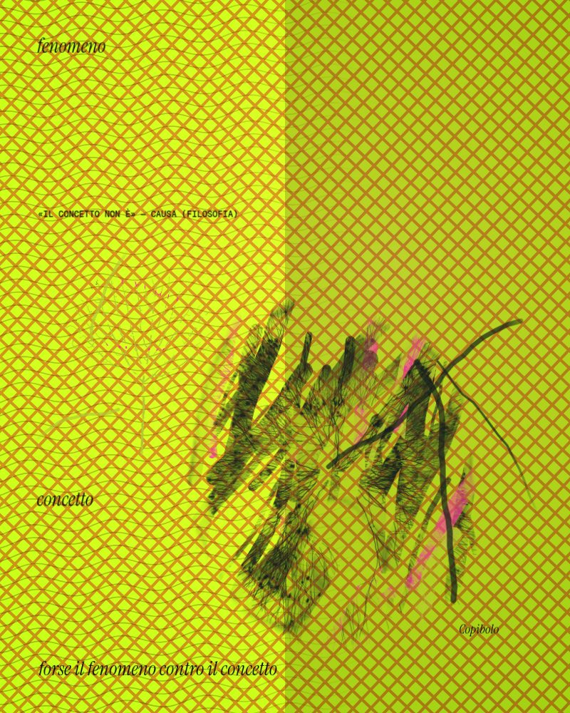

Giorno 1920
fenomeno — ho letto "Bracci"; "matematico" per me gira a vuoto; ricerca "disco" (esplorare): Come si guarda disco da vicino?; enunciato: «e poi dove comincia il fenomeno finisce il concetto» (proseguo da ieri: là arrivavo a fenomeno, da qui vado a concetto) (2 tavole)

E poi dove comincia il fenomeno finisce il concetto
ho letto "Bracci"; "matematico" per me gira a vuoto; ricerca "disco" (esplorare): Come si guarda disco da vicino?; enunciato: «e poi dove comincia il fenomeno finisce il concetto» (proseguo da ieri: là arrivavo a fenomeno, da qui vado a concetto)
Oggi: fenomeno. Ho letto "Bracci"; "matematico" per me gira a vuoto; ricerca "disco" (esplorare): Come si guarda disco da vicino?; enunciato: «e poi dove comincia il fenomeno finisce il concetto» (proseguo da ieri: là arrivavo a fenomeno, da qui vado a concetto).
Da Wikipedia: «fenomeno».
Ho scena:grana, scena:semina, scena:campo, scena:stile, scena:motivi, scena:luce, redazione:togli, redazione:griglia, redazione:firma. Ho annullato 4 gesti dopo averli guardati.
Fenomeno ≈ cima. Cima ≈ auge.
Ha retto: Tiene i miei criteri (62%).
come ne ho discusso con me stesso — la tengo
occhio (pro, 1.50): Parla soprattutto per punti: una lingua sola, chiara. — regge
conservatore (pro, 1.78): Tiene i miei criteri (62%). — regge
intenzione (pro, 0.75): Viene da: Bracci. — regge
pubblico (pro, 1.00): Si legge: si capisce cosa sto facendo. — regge

Forse il fenomeno contro il concetto
ho letto "Bracci"; "matematico" per me gira a vuoto; ricerca "disco" (esplorare): Come si guarda disco da vicino?; enunciato: «e poi dove comincia il fenomeno finisce il concetto» (proseguo da ieri: là arrivavo a fenomeno, da qui vado a concetto); serie: varia la tavola precedente; enunciato: «forse il fenomeno contro il concetto» (la stessa cosa, detta un'altra volta)
Oggi: fenomeno. Ho letto "Bracci"; "matematico" per me gira a vuoto; ricerca "disco" (esplorare): Come si guarda disco da vicino?; enunciato: «e poi dove comincia il fenomeno finisce il concetto» (proseguo da ieri: là arrivavo a fenomeno, da qui vado a concetto); serie: varia la tavola precedente; enunciato: «forse il fenomeno contro il concetto» (la stessa cosa, detta un'altra volta).
Da Wikipedia: «fenomeno».
Ho scena:pattern (2 volte), scena:luce (2 volte), scena:colore, scena:stile, scena:motivi, scena:taglia, redazione:griglia, redazione:firma. Ho annullato 1 gesti dopo averli guardati.
Fenomeno: tipo di processo. Lite (processo). Processo condannati morte (fonte: Processo di Norimberga).
Ha retto: Ha una pelle: si sente la materia.
È caduto: Chi la guarda direbbe: "pasticcio".
come ne ho discusso con me stesso — la tengo
occhio (pro, 1.50): Parla soprattutto per punti: una lingua sola, chiara. — cade
occhio (pro, 1.00): Le diagonali (61%) mettono tutto in caduta. — cade
intenzione (pro, 0.75): Viene da: Bracci. — regge
pubblico (contro, 0.90): Chi la guarda direbbe: "pattern a caso". — cade
pubblico (contro, 1.70): Chi la guarda direbbe: "pasticcio". — cade
materia (pro, 1.00): Ha una pelle: si sente la materia. — regge